What is does is:
Scrape, map and generate classifiers with the intention of generating an overview of the extent of activity already taking place at an organization
Project Background & Client Introduction
Our project came about due to a growing need within UCL, centred around the research facility in which their research administration, namely finding various things based on their topic of research such as names and other key terms. This search was taking longer and longer each year due to the increasing number of articles, papers and other publications on each topic coming out each year. This got us connected to various researchers varying from professors, PhD research students and sustainable development researchers. They all required a method to speed up this process and to help get more accurate data automatically rather than repeating this each year manually.
You may find the client's details below:
Neel Desai - neel.desai.13@ucl.ac.uk
Marilyn Aviles - marilyn.aviles@ucl.ac.uk
Prof Ann Blandford - ann.blandford@ucl.ac.uk
Dr. Simon Knowles - s.knowles@ucl.ac.uk
Project Goals
Our main project goals include trying to achieve a way for all researchers to be able to find and contact other researchers that are working on or have worked on the same field of study as them. The project goals also include trying to ensure that the RPS database can be scraped in order to find all papers that are linked to the search field used that can then be used to find all related researchers.
Requirement Gathering
We gathered various requirement in the form of a MOSCOW list that was created through a series of group and individual meetings with each of our clients in order to gather all the features and methods that are needed as well as the priority of each of these. We went over these features multiple times with our clients and added a few as well as splitting up other requirements into different parts.
Personas
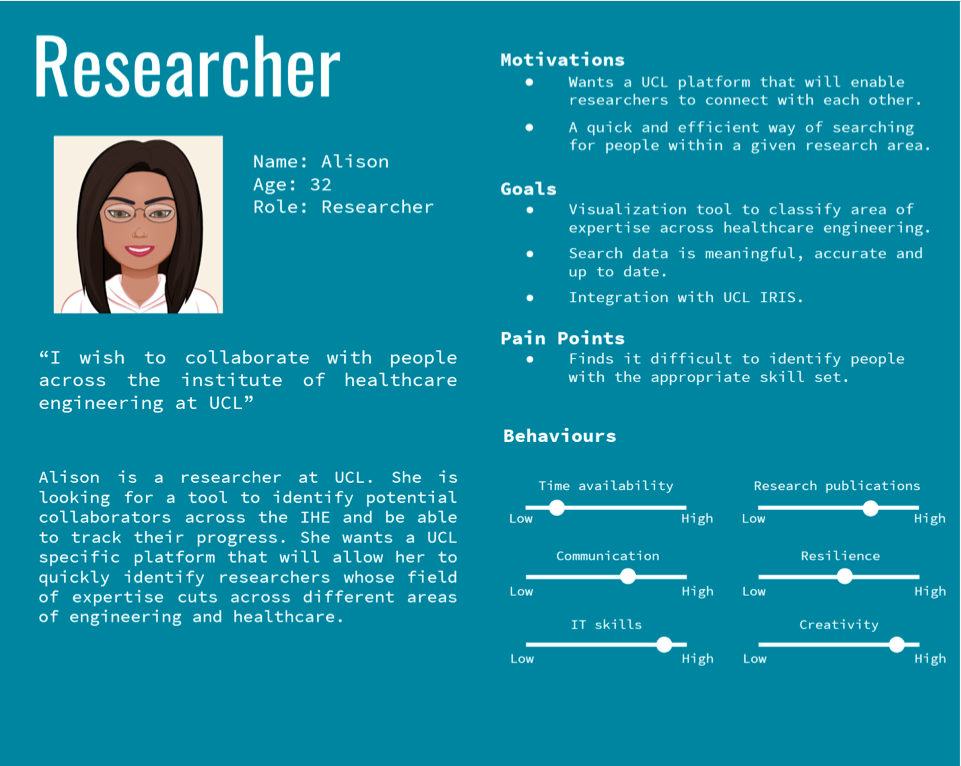
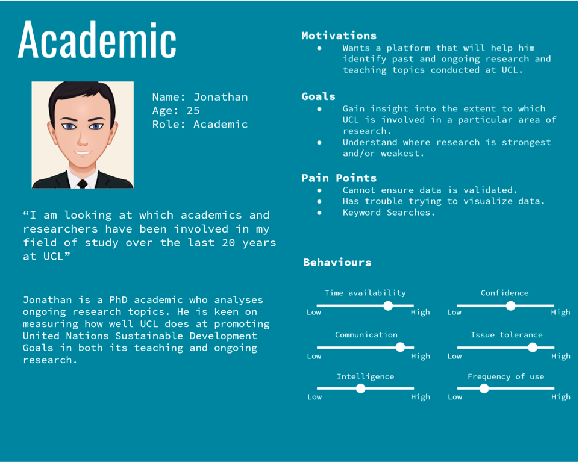
Use Cases
Alison has trouble identifying researchers to collaborate with across the IHE. She would like to use this tool as a quick and efficient way of searching for researchers across different engineering fields. She wants to establish connections across UCL and monitor the progress of her colleagues.
Jonathan is a PhD researcher who would use this data tool in order to quickly find and sort through different research topics that have or currently are conducted at his university. He aims to gain insight into the extent to which UCL is involved in promotion of the 2015 UN’s Sustainable Development Goals in both teaching and research.
MoSCoW List
Must Have:
Data Mining
Scopus - research publication data and metadata
Use Scopus API to access data points: title, abstract, DOI, subject areas, index keywords, author keywords, elsevier link
UCL Module Catalogue - module data
Use of UCL API to acquire departmental data
Module description, title, ID, module lead, credit value
Data Validation
SDG Keywords - UCL module catalogue and Scopus research publications
Use string matching to count occurences of SDG-specific keywords and compare distribution with that trained by mode prediction. (similarity index)
Providing most up-to-date data on research publications and course modules
Django visual validation on a RGB red→green scale
Data Visualisation
Tableau (accessed through database credentials)
View SDG sizes in accordance to students per module / department / faculty
Django web application (deployed)
Search for UCL modules and Scopus data
Export modules / scopus search results to CSV
View TSNE Clustering for SDG & IHE mappings
Bubble Chart
Spreadsheet
Should have:
Django visual validation on a green ← red colour scale
Add configuration options for keyword search
Interaction with the bubble chart / tableau to give a list of researchers within a particular category
Walkthrough guide on final product usage & maintenance
Could Have:
Link to IRIS account
Profile pages for each researcher
Main page description of what the website does and how it works
Would like to have:
Filtering options to allow for more explicit searches
Related Projects Review
One of the previous projects conducted is the “Bubble-Chart Project”, which is a pilot project exploring the use of programming techniques as a tool to create an ontology-based mapping of healthcare engineering and digital health expertise across the Institute of Healthcare Engineering. Inspired by the IDH Bubble Chart, the aim of this project is to update the original version with new information and themed-based categories that include the wider breadth of healthcare engineering expertise across IHE. The first phase of the pilot explored using UCL’s RPS platform as a source data for the project.
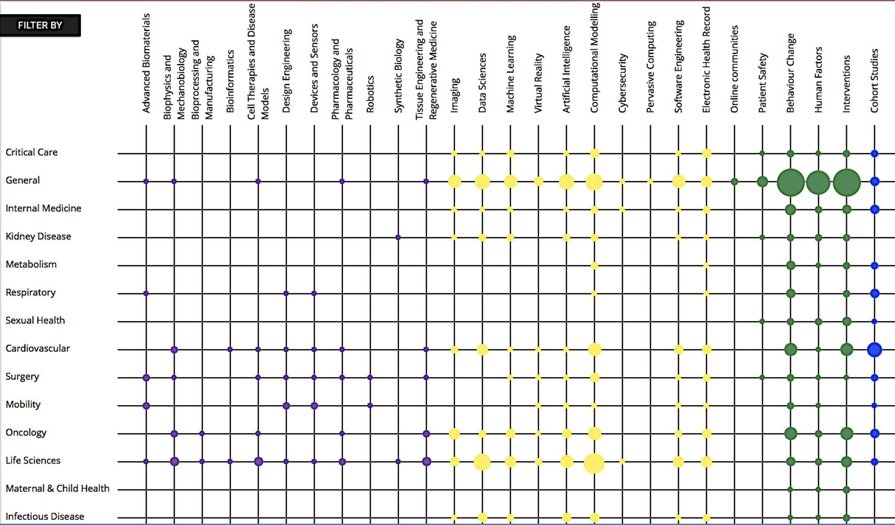
What we can learn from this project is the data sources used, as well as explore classification techniques for classifying researchers’ publications into appropriate fields. Subsequently, given existing data that was put together manually, UCL5 MieMie aims to automate data scraping and validation using Python programming language and deployment technologies.
Technology Review
Possible Solutions:
Possible solutions include using Python’s scraping library Beautifulsoup to gather data from a specified source, setting up a deployment environment in Microsoft Azure and utilising Azure Functions for timing each scrape and validation automatically. The code base itself resides on a GitHub repository. The idea is to perform an initial large scale scrape, gathering initial set of data in a structured and normalised manner. Upon completion, the next step involves a different set of programs that run with the purpose of checking the source data set for potential updates / changes to the data. If any change is observed, the scripts are to stage a validation on the project’s data.
Possible Design Structure
The code structure would involve a general controller to manage a potentially threaded program, running multiple validation scripts on an existing database. Azure Functions allows time the scrapes, where the python file object is passed to the azure.functions.TimerRequest object to perform a set operation. The time is specified in the CRONTAB notation - “schedule: 0 0 * * * *” [1], which specifies that an action is to be performed once at the top of every hour).
Possible Programming Languages / APIs
To gather data, we are going to be using RPS UCL data repository. It has several access types, and the public section of it is accessible through the use of their API [2].
NLP and Topic Modelling
Background Research
A problem encountered by one of our clients was to understand and map teaching at UCL to the 17 sustainable development goals. The SDGs were set by the United Nations in 2015 and are intended to be achieved by 2030. These goals are designed to achieve a better and more sustainable future for everyone. The proposed solution is to map research publications from Scopus API and modules from the UCL module catalogue to a subset of the 17 SDGs. We have been given a list of SDG-specific keywords to search through the abstract and description of each research paper and module respectively.
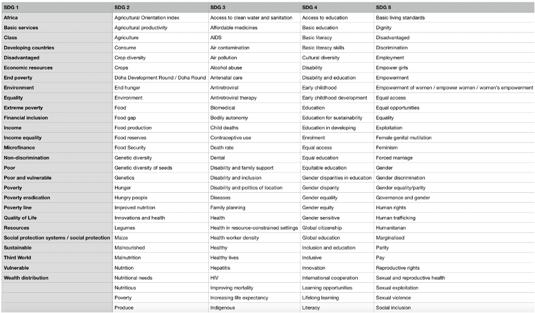
This image shows a small section of the SDG-specific keywords where:
SDG 1: No Poverty –“End poverty in all its forms everywhere”
SDG 2: Zero Hunger – “End hunger, achieve food security and improved nutrition and promote sustainable agriculture”
SDG 3: Good Health and Well-Being – “Ensure healthy lives and promote well-being for all at all ages”
SDG 4: Quality Education – “Ensure inclusive and equitable quality education and promote lifelong learning opportunities for all”
SDG 5: Gender Equality – “Achieve gender equality and empower all women and girls”
The approach described in the webinar recording “Practical approaches to mapping university contributions to the Sustainable Development Goals (SDGs)” used a list of keywords compiled by Monash University and SDSN Australia/Pacific. The methodology described by Macquarie University Sustainability Department is to collect together different subthemes and map each subtheme onto each SDG. The information was given in a table where each subtheme is a row of the table and each SDG is a column of the table.
Proposed Solution
Our first solution to carry out the mapping is to do a string search through the description of a module for each SDG-specific keyword, count the number of occurrences of each keyword and sum those up for each SDG (sustainable development goal). However, this approach has many flaws. If the module description contains very little or doesn’t contain any SDG-specific keywords but still teaches students about many of the SDGs then data integrity is lost, causing modules to have inaccurate labels. Moreover, we have the same problem if a module contains many of the SDG-specific keywords but doesn’t educate students about the SDGs.
Improving on the string matching approach, our next solution aims to carry out the mapping by manually annotating each module from the UCL module catalogue to a subset of the SDGs. However, we believe this solution to be outside the scope of our knowledge since we would need a greater understanding of how the SDG-specific keywords were compiled and teaching across different faculties and departments. Our annotation will be inaccurate, biased and very time consuming to annotate over 5000 UCL modules. However, with more time and research this approach will the best in terms of accuracy and reliability.
The proposed solution is very similar to the subtheme approach by Macquarie University. We have decided to use semi-supervised LDA (Latent Dirichlet Allocation) called GuidedLDA. The reason for using semi-supervised LDA instead of the general LDA (topic modelling) algorithm is that it allows us to control the generated topics by using the SDG-specific keywords as seed topics. Thus, each generated topic corresponds to one of the 17 SDGs. The model encourages topics to be built around these seed words, with some set confidence, whilst also uncovering more words. By using the seeded topics (SDG-specific keywords) as a reference point, it allows us to classify known topics more easily without manually annotating over 5000 UCL modules. Thus, encouraging topics to converge in the direction specified by the SDG-specific keywords.
Topic Modelling (GuidedLDA)
Latent Dirichlet Allocation (LDA) is an unsupervised topic modelling algorithm used to classify text in a document to a topic. The aim of LDA is to find topics which best describe a corpus of documents, which in our case are the UN Sustainable Development Goals and the UCL module catalogue respectively. LDA manages a topic per document model and words per topic model, both of which use Dirichlet distributions from probability theory. The words per topic model describes how to compute the probability of a word belonging to a particular topic, whereas the topic per document model describes for each document the probability a topic is related to that document. This model should be used to finalize the mapping of UCL modules to SDGs.
The interface for the GuidedLDA follows conventions from the scikit-learn machine learning library. It has been production trained on half a million documents, ran predictions on millions and manually checked thousands of topics. The algorithmic design is explained in the paper “Incorporating Lexical Priors into Topic Models” by J. Jagarlamudi, H. Daume III and R. Udupa. The paper explains how priors (seeded words) can be set into a topic model to guide it in the right direction.
The seeded words should be representative of the underlying topics in a corpus. It uses these seeds to improve topic-word distributions and document-topic distributions. To improve the topic-word distribution, each topic prefers to generate words that are related to the words in the seed set. To improve the document-topic distribution, the model is encouraged to select document-level topics based on the existence of seed words in a document.
Another method of performing the mapping is document clustering. The model described in the paper uses a baseline (maxCluster) which counts the number of tokens in each document from each of the seed topics and assigns the document to the seed topic which has the most tokens, resulting in a clustering of documents based on the seed topic assigned to them. The purpose of this baseline is to evaluate the effectiveness of the SDG keywords for our module catalogue corpus, and to use it as a means of validation for the SDG mapping with GuidedLDA.
The words per topic model describes how to compute the probability of a word belonging to a particular topic. The algorithm shown below describes the main stages for generating topic and word distributions:
For each document d∈D, randomly assign each word in the document to one of the k topics (where k is the number of topics) using a discrete uniform distribution (LDA). For GuidedLDA, during initialization, give some extra boost to the seeded words, such that they are more likely to be assigned to the seeded topic.
For each document d∈D, go through each word w∈d and compute the following:
For each topic t, compute P(t│d): proportion of words in document d that are currently assigned to topic t, excluding the word w. If there are a lot of words in document d that belong to topic t, then it is more likely that the word w belongs to topic t.
For each topic t, compute P(w│t): proportion of assignments to topic t across all documents that come from the word w. If a word has a high probability of being in a topic, all documents which have w will be more strongly associated with topic t (the converse is also true).
For each topic t, update the probability for the word w belonging to topic t as: P(t│w,d)=P(t│d)∙P(w│t)
Repeat the previous step many times, with each iteration yielding more accurate and reliable distributions. For GuidedLDA, there should be a higher count of seeded words belonging to seeded topics and the convergence of the model will change.
In LDA, documents are probability distributions over latent topics and topics are probability distributions over words. LDA takes a corpus of documents, assuming that the words in each document are related. Our job is to tell LDA how many topics to construct, in our case there are 17 topics (one for each SDG) and it uses the algorithm described above to generate topic and word distributions over the corpus.
Database
Microsoft Azure SQL Server will be used to host a SQL Database. Alternative options include using non-relational databases such as a document based database - mongoDB. However, upon evaluation, the team has decided to use the concept of relations to organise data in a logical and coherent manner, with faster access time, ensuring data consistency and integrity.
Deployment Automation:
Digital Ocean
Digital Ocean Allows for creation of a Droplet Cronjob, for automation of particular scripts that run in a Linux VM. Although it's convenient, it does not provide features like backups, security firewall and it's harder to keep track of permissions compared to something like AWS or Microsoft Azure.
It is a good choice for this project due to its simplicity; given a tight schedule we are still able to manage to stick to the ideologies of continuous integration and test-driven development.
Microsoft Azure (Functions)
Secure, robust, scalable and stable. However, questionable for a smaller size project.
Microsoft Azure Functions allows for cron job-like functions to run continuously, relatively easy to set up.
Microsoft DevOps (Pilepines)
Ideal for cooperation, continuous delivery and deployment. It is a useful tool for this project, allowing for planning, tracking and evaluating current progress using Azure Boards.
Unlike Digital Ocean, Microsoft DevOps is superior with regard to deployment frequency, reduced change failure rate and recovery. It was a rival choice, however, one needs to take the scale and development process into consideration.
CloudSigma
A good tool with strong performance, speed and security, however it lacks some essential features such as secure routine back-ups or easy shared hosting. Additionally, it uses servers based in the UK for better speed and connection with a lower latency, but this is usually a tool used for much larger projects than the one that we are developing.
Heroku
Heroku is a convenient platform for fast deployment, However, it lacks many of the security and scalability features that are offered by platforms like Microsoft Azure.
References
[1] Docs.microsoft.com. 2020. Timer Trigger For Azure Functions. [online] Available at: https://docs.microsoft.com/en-us/azure/azure-functions/functions-bindings-timer?tabs=python [Accessed 6 December 2020].
[2] Information Services Division. 2020. How To Include RPS Data On Your Webpages. [online] Available at: https://www.ucl.ac.uk/isd/how-to/how-to-include-rps-data-your-webpages [Accessed 6 December 2020].
System Design
Design Structure: Module Catalogue
The module catalogue is a key place in which our NLP takes place in order to recognise and identify various Sustainable Development Goals (SDGs). In our design, we used the descriptions from each module in order to identify a keyword that strongly correlates to that module and can be used to check whether certain modules contain and talk about various SDGs.
We keep these matched modules in a separate file as this allows it to be easily read, and this is a file that can be used in order to send through results easily to our clients as search results.
Design Structure: Scopus Matching
Our design here works slightly similarly to the way the SDG matching works in the UCL Module Catalogue in which all the data points for each publication on the Scopus database are matched to the SDG through keywords. Again, these successful matches are put into a separate file for easy access.
Key Functionalities
Our first key functionality is for the mapping of relevant SDGs to the UCL Module Catalogue which is accomplished by gathering keywords from each of the SDGs using our Natural Language Toolkit to get those keywords. These keywords are matched to each Module using the “Beautiful Soup” library to fetch the webpage of each module in a html format that can be matched with the keywords using the Natural Language Processing algorithm GuidedLDA (see Implementation).
Our second key functionality is searching and matching certain terms within the Scopus database in order to find researchers who have worked on a specific topic by matching with their published works by checking every given field.
Server Communication Structure
The user would send requests to the database via a search tool that would use keywords of the user’s choice that would be used as the basis of their search. This request is sent to the azure database where it then sends a request to the information database (such as RPS) and this would provide the full scale of information and data that it contains. This information is used by our algorithm to scrape and sort through the information based on the user’s request. Once it has the required, sorted information, it is then sent back to the user in a form that can be easily visualised.
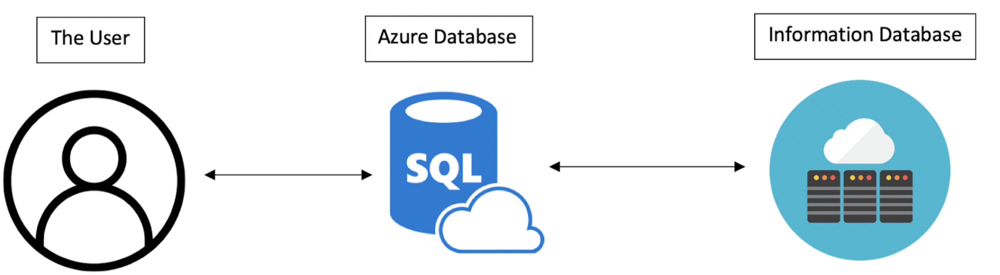
Class Diagram
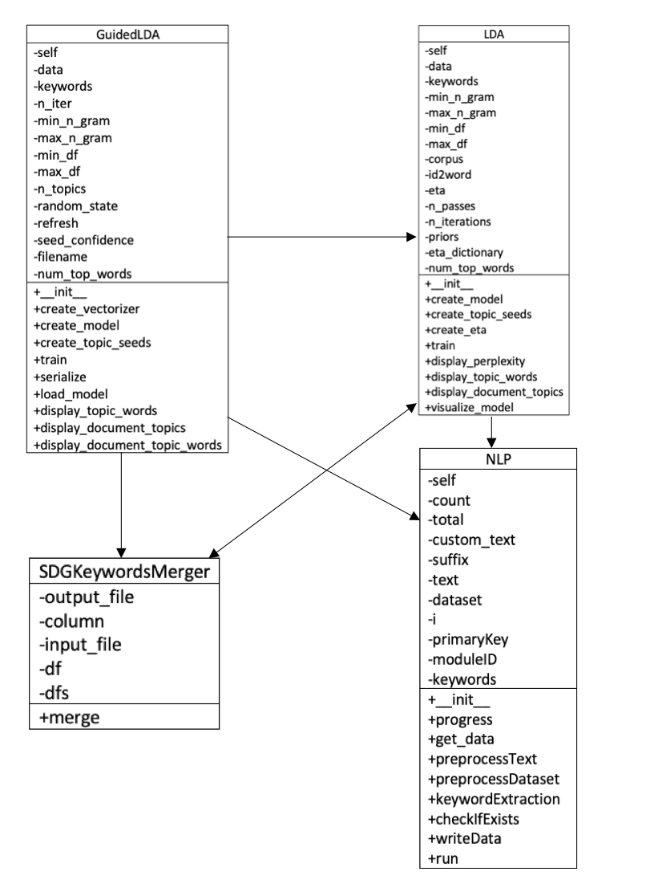Django Design
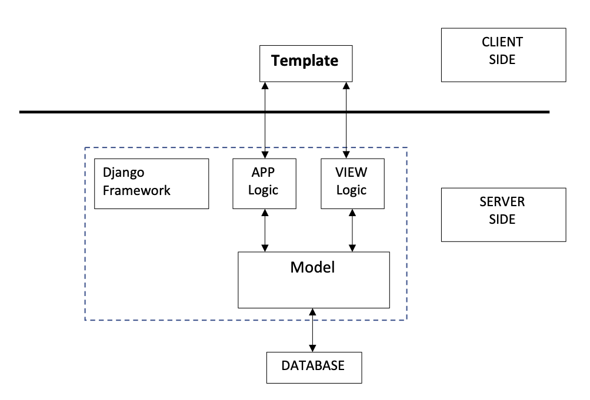Programming Language and Integrated Development Environment
We will be using the Python programming language for ease of implementation with front-end web development and natural language processing
There exist many libraries and APIs such as NLTK, PyTorch and spaCy that are widely used for NLP related tasks and provide a large amount of support, which, furthermore, will help with learning around the subject area
The Microsoft Azure cloud-based service offers central management for our system code, databases and timed scrapes
Azure functions support data mining related tasks – scraping the RPS database and UCL module catalogues
Web Scraping
First Part: Scraping UCL Module Catalogue
As the first step, it was necessary to gain insight into the extent to which UCL is able to deliver the key ideologies outlined in the 2015 United Nations Sustainable Development Goals (hereafter SDGs) through teaching. Hence, the UCL Module Catalogue was proposed as a data source for natural language processing and categorisation. Initially, the UCL API was used to comprise a unique module link. For example, the API provided module name - “Neurology and Neurosurgery - Basic” and module identification “CLNE0012”, which was then used to concatenate to form a final module link - https://www.ucl.ac.uk/module-catalogue/modules/neuromuscular-literature-review-CLNE0010. The data as such was stored in the all_module_links.json file for future use and can be updated by running the initialise_files.py file in the MODULE_CATALOGUE/INITIALISER directory. Consequently, that unique link was piped into the "BeautifulSoup" Python library to obtain a webpage html file data for all 5576 modules (at the time of conducting the project).
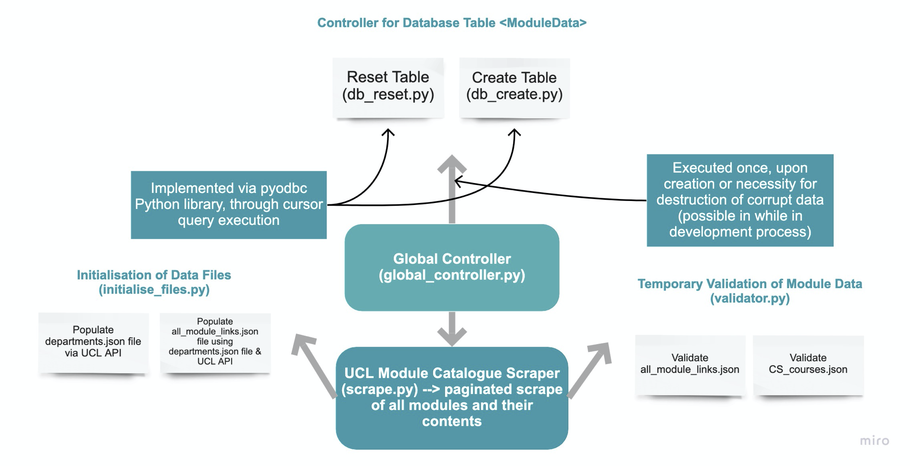
Object oriented programming allowed us for greater control of instantiation, encapsulation and abstraction of data mining scripts. Specifically, it was useful in abstraction of initialisation, specifically, obtaining all module-related and departmental metadata. Thus, by running global_controller.py one may instantiate all necessary files to proceed with the module-to-SDG mapping process. The following data points were obtained: module title, module ID, faculty, department, credit value, module lead name and description. Upon processing each one of those strings into cleaner form, the data was organised into a tuple and stored in a list and pushed to the ModuleData table in the MainDB database using “pyodbc” Python library.
Processing Algorithms
It is worth noting that the processes described below formed a part in a back-up, alternative approach to SDG mapping. Due to an issue with large dataset annotation, it was agreed with our clients that this change was necessary for delivering an improvement into the current classification processes.
UCL Module Catalogue Matching
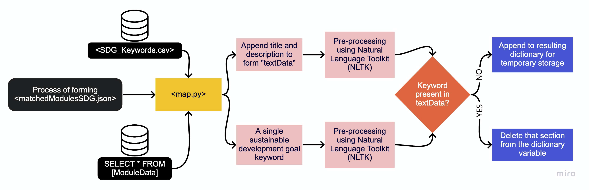
The following process illustrated below demonstrates the algorithm for matching UCL Module Catalogue to sustainable development goals provided in the SDG_Keywords.csv file. The processing file - map.py also pulls the data from ModuleData database table, which contains all data relating to a particular module, including its description, title, credit value, module lead name and so on. It uses that data to comprise a single string, which alongside a single keyword is piped into a pre-processing unit, which uses NLTK to lemmatise the given strings. Lastly, the algorithm checks whether or not that keyword is present in any text data in a particular module, if so, it stores it into the matchedModulesSDG.json file.
Scopus Matching
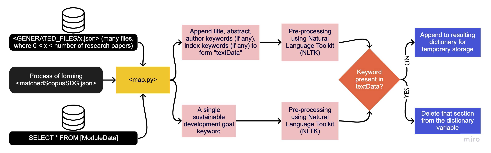
Diagram above illustrates a similar to the Module Catalogue to SDG Mapping, but this time it matches Scopus Research Publications to the sustainable development goals. The only difference is the type of data considered. Scopus provides more details about a particular publication, therefore, it allows for greater comparison and a more accurate matching. In this case, data points like abstract, title, author keywords, index keywords and subject area keywords are considered during string comparison. As a result, it generates the matchedScopusSDG.json file for further development.
Scopus Data Generation
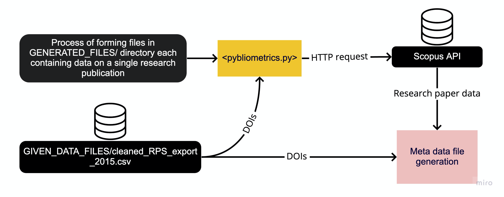
Diagram above illustrates the formation of the underlying dataset - common to all members of our client group. Therefore, the pybliometrics.py program carries out numerous tasks including reading individual research publication identifiers (DOIs) from the Research Publication Service (RPS) to act as a basis for the Scopus API request using the Python “requests” library
UCL Module Catalogue Keyword Extraction
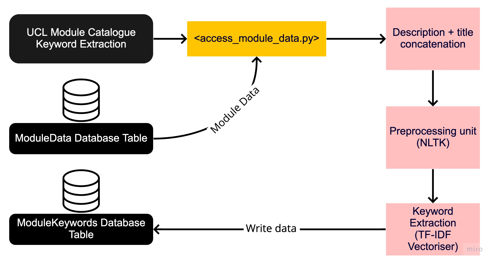
Unlike Scopus publication data, where most papers have assigned keywords, catalogue modules are unlabelled. Hence, in order to apply the Latent Dirichlet Allocation algorithm called GuidedLDA, it is necessary to extract keywords that are representative of that particular module. Diagram above shows the processing stages of the access_module_data.py script. Firstly, it uses a database written by previous scrips to organise module metadata, then concatenates any strings that will be used. NLTK is used to preprocess the text data, which is then piped into the Term Frequency–Inverse Document Frequency (TF-IDF) vectoriser to perform a numerical statistic which will indicate the significance of each word, essentially demonstrating how reflective that word is of a particular collection of text data. Consequently, top 5 were taken, excluding any that have a significance less than 0.001. The resulting keywords, alongside the module identifications string are written to the ModuleKeywords database table hosted in Microsoft Azure server. The module identification string is specified as a primary key for ease of data retrieval.
NLP – Natural Language Processing
Description
The process of mapping UCL modules to UN SDGs (Sustainable Development Goals) is carried out using the semi-supervised GuidedLDA algorithm, described in the Research section. The GuidedLDA library uses Latent Dirichlet Allocation internally with topic seeds, which guide the algorithm and help it converge around those seeds (SDG keywords). The topic seeds are only used during initialization, whereby the seed words are much more likely to be matched with their corresponding topic seed. (Link to Source)
Natural Language Processing
The first stage is to pre-process the data using Natural Language Processing (NLP) techniques.
Normalization: remove punctuation and separate words between forward slashes.
Tokenization: convert text into sentences and those sentences into lowercase tokens, remove stopwords and words less than 3 characters.
Lemmatization: change words in future and past tenses to present tense and words in third person to first person.
Stemming: chops off the end of words and reduces them into their root form.
For this, we will use the NLTK and gensim libraries for pre-processing the module descriptions. The gensim API provides simple pre-processing methods for converting a document into a list of lowercase tokens and stopwords. NLTK provides more stopwords, a part of speech tagger, the WordNetLemmatizer class for lemmatization and SnowballStemmer class for stemming. The CountVectorizer or TfidfVectorizer classes from the sci-kit learn machine learning library are used to create a document-term matrix. This matrix forms the features of our model. The CountVectorizer class converts a collection of raw text documents to a matrix of token counts, whereas the TfidfVectorizer class converts the raw documents to a matrix of TF-IDF features.
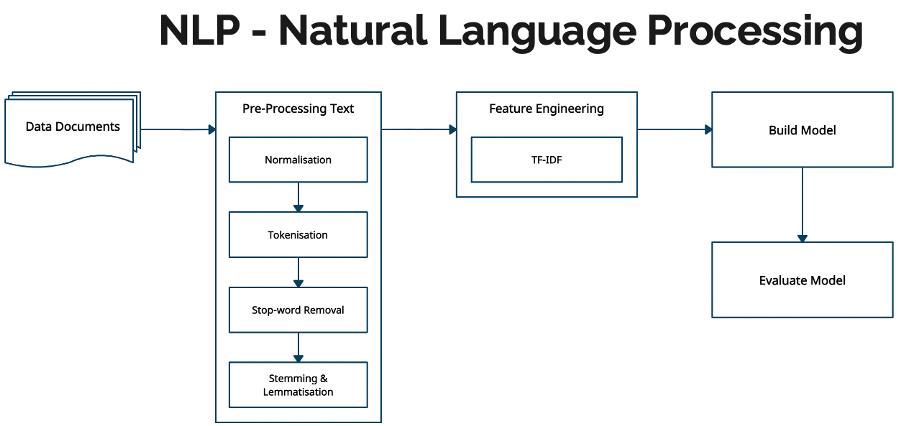
The Feature Engineering block implements the CountVectorizer or TfidfVectorizer classes to create a document term matrix. The Build Model block implements the GuidedLDA algorithm.
GuidedLDA
The diagram below demonstrates how GuidedLDA can be applied to map UCL modules to UN SDGs. The input consists of documents which are a substring of the module description for 4 different UCL modules and synthetic SDG-specific keywords for 17 different SDGs (numbering is not accurate). The output consists of topics with a set of words weighted by how important a word is for a given topic and documents with a set of topics weighted by how likely a topic is related to a given document. We did not train a model for this dummy dataset, but merely made-up the inputs and outputs but is supposed to demonstrate how the mapping will work.
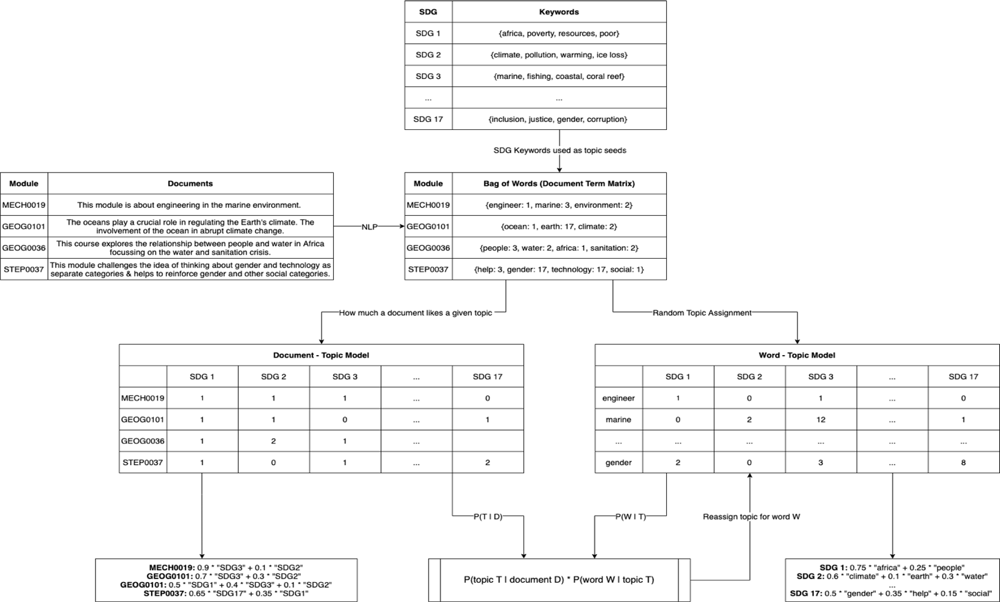
Applying Natural Language Processing to the corpus produces a bag of words model for each document followed by a document-term matrix using CountVectorizer or TfidfVectorizer. The words are randomly assigned a topic but are largely influenced by the SDG-specific keywords. For example, the word marine in MECH0019 has a greater chance of being assigned to SDG 3 than SDG 1 because marine ∈ {marine, fishing, coastal, coral reef} which are the keywords for SDG 3. Following the random topic assignment, a word-topic matrix is produced where each cell is the number of times a word has been assigned to a topic and a document-topic matrix is produced where each cell is the number of times a topic comes up in a particular document.
Following the algorithm for GuidedLDA in the research section, it computes the proportion of words in a document that are assigned to a topic and the proportion of assignments to a topic across all documents that come from a particular word. Now, update the probability of a word belonging to a topic as the product of these two values and reassign a topic for the word. This procedure only counts as one iteration for the GuidedLDA. In practice, we train our model on hundreds of iterations to help it converge, yielding much more accurate results.
For the dummy dataset example, the GEOG0036 module on Water and Development in Africa is most related to SDG 1: No Poverty with a score of 0.5 and the MECH0019 module on Ocean Engineering Fundamentals is most related to SDG 3 with a score of 0.9. This makes the most sense because the keywords for SDG 3 are {marine, fishing, coastal, coral reef} which is meant to represent the SDG Goal 14 on Life Below Water - “Conserve and sustainably use the oceans, seas and marine resources for sustainable development.”
NLTK – Natural Language Toolkit
The NLTK – Natural Language Toolkit has advantages over PyTorch, making the code much more condense, manageable, and ease of implementation for NLP.
NLTK feature include tokenization, named-entity recognition, text classification, text tagging and RAKE – Rapid Automatic Keyword Extraction which is used for mapping keywords to UCL modules listed in the module catalogue.
Django Search Engine Web Application
As part of one of the client requirements, we are to interface the data gathered onto a web application. Although many alternatives exist, Django stands out as a best-suited solution for the task at hand. Below one may find an overview desired and the basic functionality the web application provides:
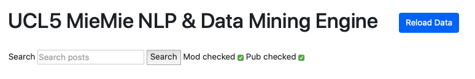
Since all the data scraped is stored in the Azure SQL Server, it is necessary to migrate the data into the Django SQLite database. Hence, we start by defining a model for the module data:
Department_Name = models.CharField(max_length=200)
Department_ID = models.CharField(max_length=100)
Module_Name = models.CharField(max_length=200)
Module_ID = models.CharField(max_length=100)
Faculty = models.CharField(max_length=200)
Credit_Value = models.IntegerField(default=0)
Module_Lead = models.CharField(max_length=100, null=True, blank=True)
Catalogue_Link = models.CharField(max_length=200)
Description = models.CharField(max_length=1000, null=True, blank=True)
Last_Updated = models.DateTimeField
This creates the fields that match the MySQL data type fields:
CREATE TABLE ModuleData (
Department_Name VARCHAR(150),
Department_ID VARCHAR(150),
Module_Name VARCHAR(150),
Module_ID VARCHAR(150) PRIMARY KEY,
Faculty VARCHAR(100),
Credit_Value FLOAT,
Module_Lead VARCHAR(100),
Catalogue_Link VARCHAR(MAX),
Description VARCHAR(MAX),
Last_Updated DATETIME DEFAULT CURRENT_TIMESTAMP
);
Upon its creation, a Django views.py is used to gather the objects, and pressing the “Reload Data” button makes a query to the Azure SQL tables to copy over the data and populate the Django objects (unless they already exist in the records). A similar process occurs for the research publications scraped from Scopus platform. Next step involves creation of the index.html, module.html and publication.html for the Django class-based views, allowing a creation of dynamic details page display without creation of an HTML page for each object specifically.
Publication Detailed View Page
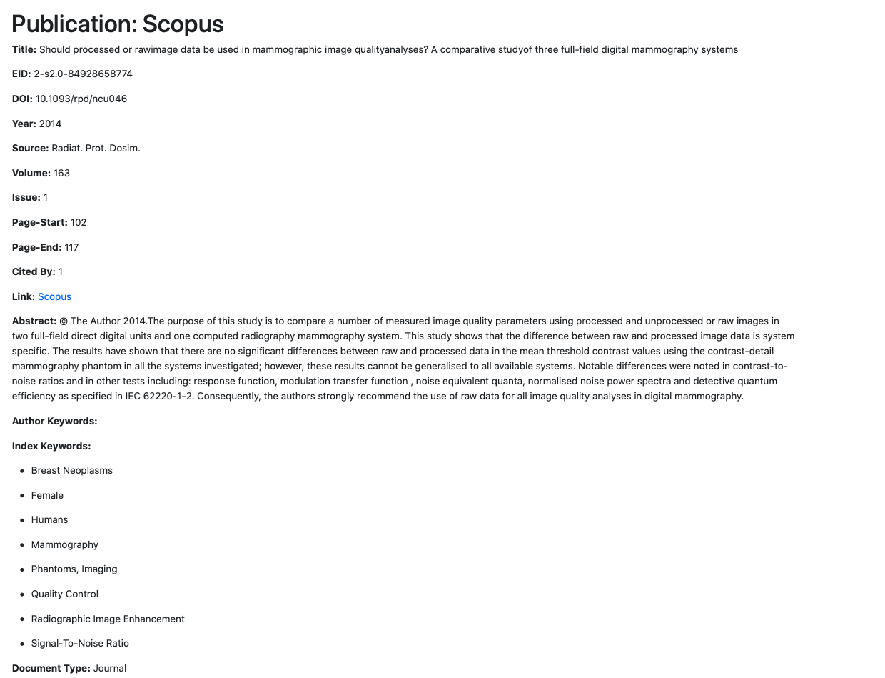
Publication Detailed View Page
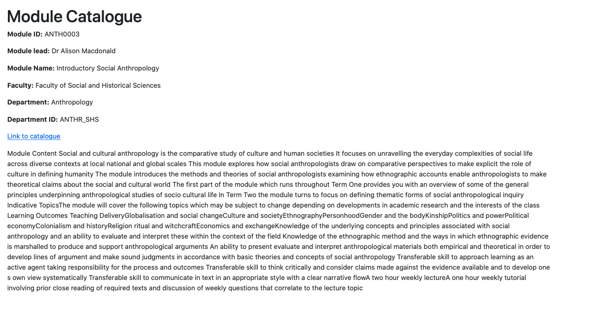
The next step is to implement the most important aspect - search. In the case of two sources of data, we include a checkbox for selecting either source or both sources. We still use the Django views.py to create a function to perform the search across all data fields (any text-format piece of data). Upon running the search, Django utilises filtering function to produce a dictionary of objects that match the criteria and are then passed onto the index.html, where embedded Python code deals with display manner and style. Subsequently, we produce the following product:
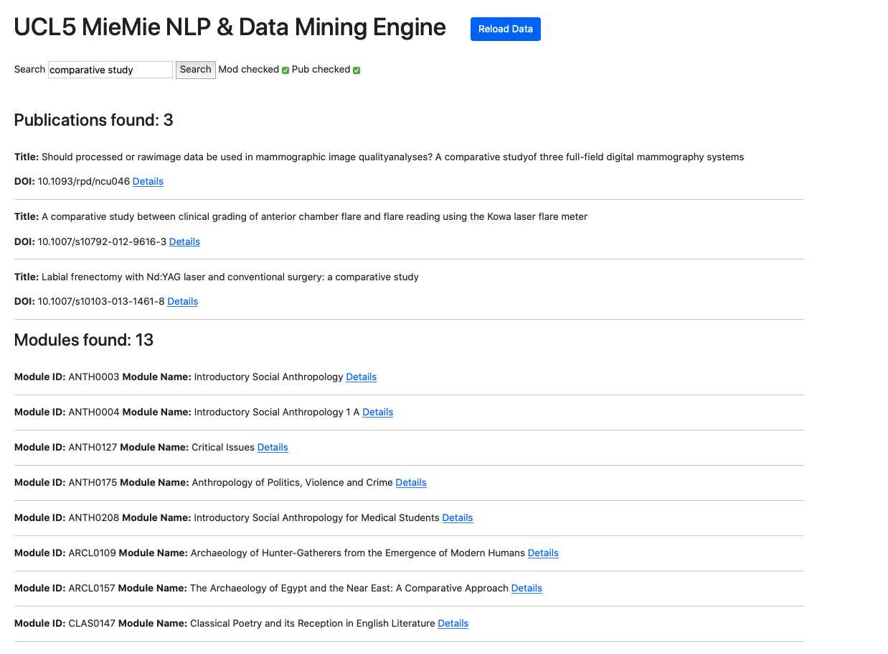
References
[1] 2020. Keyword-Based Topic Modeling And Keyword Selection. [ebook] Evanston, Illinois: Northwestern University. Available at: https://arxiv.org/pdf/2001.07866.pdf [Accessed 10 December 2020].
[2] Lagus, K. and Kaski, S., 2020. Keyword Selection Method For Characterising Text Document Maps. [online] Helsinki, Finland: Helsinki University of Technology, Neural Networks Research Center. Available at: https://users.ics.aalto.fi/krista/papers/lagus99icann.pdf [Accessed 10 December 2020].
[3] Montantes, J., 2020. Getting Started With NLP Using The Pytorch Framework - Kdnuggets. [online] KDnuggets. Available at: https://www.kdnuggets.com/2019/04/nlp-pytorch.html [Accessed 10 December 2020].
[4] Nascimento, A., 2020. How To Cook Neural Nets With Pytorch. [online] Medium. Available at: https://towardsdatascience.com/how-to-cook-neural-nets-with-pytorch-7954c1e62e16 [Accessed 10 December 2020].
[5] Pytorch.org. 2020. TOURCH.NN — Pytorch 1.7.0 Documentation. [online] Available at: https://pytorch.org/docs/stable/nn.html#recurrent-layers [Accessed 10 December 2020].
[6] Spacy.io. 2020. Training A Text Classification Model. [online] Available at: https://spacy.io/usage/training#textcat [Accessed 10 December 2020].
Testing Strategy
The strategy of testing the validation of our model training results is to use a combination of mathematical concepts from machine learning:
Cosine similarity
Squashing function
Cosine similarity is used to compare the angle between vectors A,B∈, where in our case n= 1 8 and each component ai∈A for i=1,2,…,18 is the probability the model predicted for how much a document is related to SDG i and each component bi∈B for i=1,2,…,18 is the ratio of keyword counts for SDG i. From these assumptions, two properties hold:
‖A‖=1 and ‖B‖=1
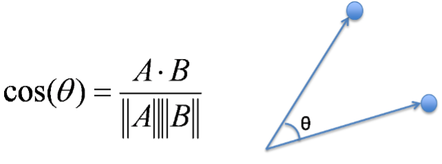
From these properties we can deduce that:
A squashing function f:X→Y is a bijective function where X= and Y=[0,1] maps any input x in to f(x) in the range [0,1]. In our case, x is the number of keyword occurrences and if f(x) is close to 1 then it gives a greater belief for the similarity of 2 vectors whereas if f(x) is close to 0 then it is unlikely that 2 vectors are similar, since the count will be very low.
f:→[0,1] exists s.t. f(x)=1/2(tanh(ax-b)+1) where a,b are scalable constants.
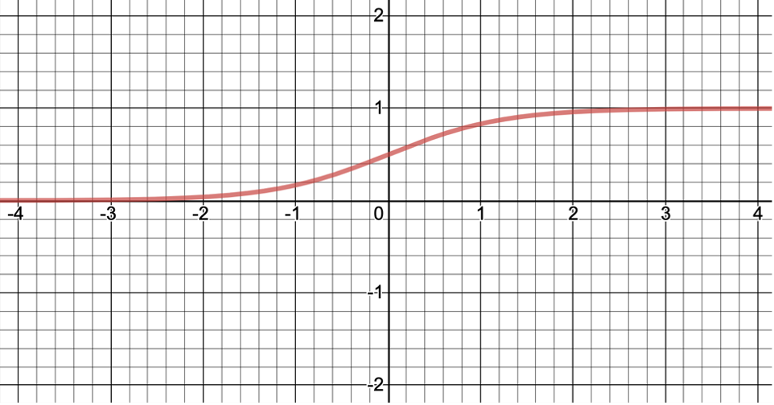
The similarity is computed as which also has range [0,1].
Other testing strategies not explicitly related to machine learning are using assert statements throughout the code which are the condition or Boolean expression which should always be true in any instance of running the code. Failing an assert inside a function means the function was incorrectly called or the data passed to it is incorrect. For example, when using our model to make a prediction on the DOI of a research paper, we have an assert that the length of the dataframe is equal to 1, otherwise if the length is 0 then an invalid DOI was provided.
Performance & Stress Testing
User acceptance testing: Feedback From Testers & Project Partners
Neel Desai
The project partners feedback upon trying out our project product was positive. This is a novel tool that utilises a machine learning model to gather a clear picture of UCL’s modules and publications, specifically, analysing and visualising the extent to which the institution is able to deliver UN’s Sustainable Development Goals (SDGs) ideologies through teaching and research. For Neel’s requirements, we achieved to cover all functionalities requested, with which he was pleased. Moreover, his additional request for including export functionality was quickly implemented. The final demonstration reveals that the solution works for the user, providing appropriate output, with minimum loading time of the Django interface. The application has proved itself as easy to navigate. Furthermore, the web-app provides error messaged when trying to export empty fields (when search resolves no matches for instance), allowing the user to understand and recover from this error without losing search input and current checkboxes’ state.
With regards to another user group that aims to understand and view SDG mappings, a second page of the Django web-app was developed. The team conducted numerous meetings to test the application with the user, to gain insight on whether or not the data displayed is useful and the site is usable. The webpage provides multiple functionalities that had to be individually tested with the user present, to ensure that one is able to recover from accidental input. Consequently, software tested revealed that it is able to handle required tasks in accordance with the specifications and design requirements.
Simon Knowles
The feedback given to us by our client, Simon Knowles and project partner, Richard Allen from our original prototype demonstration emphasised on validating the model training results by comparing those results with SDG keyword string matching counts as an alternative method for mapping modules to SDGs. Furthermore, our clients wanted more data and visualisation describing a “bigger picture” of the mapping from UCL modules to SDGs. One of their requests was a bubble map diagram where each bubble represents an SDG, whose area is proportional to the number of students being taught about that particular SDG. In regard to this feedback, we were given a spreadsheet of the number of students against module reference numbers (e.g. FREN0074) so that we were able to produce the appropriate diagram:
In addition, we extended the UI to give a visual representation of the validation process, which was comparing the similarity of the results obtained by our model to those obtained using a simple keyword string matching algorithm. Further filtering options were added to filter the table by comparing the similarity of modules to the values input by the user:
Why This Test, Which Tool, How The Test Was Conducted, Results & Analysis
One of the issues encountered when gathering data from Scopus using pybibliometrics - an API wrapper was invalid DOIs. Our team was provided with a UCL Research Publications Service extract, containing a list of unique publication identifiers. However, not all exist in Scopus records. Hence, the script would either crash when encountering a non-existent DOI or would identify a paper as invalid due to other errors. Hence, it was necessary to test whether the error raised was purely due to invalidity of the DOI.
The tool we picked was Postman - a software tool for API call testing. The test was conducted on a semi-manual basis. More specifically, upon monitoring the log files, which report both successful API package admission and failed ones, we would validate suspicious DOIs in Postman, which eliminates the need to have a development environment and isolating the API call.
Summary of Achievements
Achievement Table
| ID | Requirements | Priority | State | Contributors |
|---|---|---|---|---|
| 1 | Data Scraping (RPS, Scopus, UCL Module Catalogue, SDGs) | Must | ✓ | Albert |
| 2 | Merged SDG keyword set | Must | ✓ | Kareem |
| 3 | Validation of GuidedLDA Model Training Result | Must | ✓ | Kareem |
| 4 | Data Visualisation (Tableau, Bubble Chart, List, CSV, JSON, Django) | Must | ✓ | Kareem, Albert |
| 5 | Profile pages for each researcher | Could | ✖ | All |
| Key Functionalities (Must have and Should have) | 100% completed | |||
| Optional Functionalities (Could have) | 50% completed | |||
A List of Known Bugs
| ID | Bug Description | Priority |
|---|---|---|
| 1 | Scraping error identified as an invalid DOI. Error raised was not due to an attempt to pull a research publication that does not exist in Scopus records but rather due to inability to control request rate and request count, given that the API sets weekly quotas. Hence, the code would seem as if it is performing well, however, it may just make a call to a wrongly formatted DOI string or the key may have exceeded the allocated quota limit. | High |
Individual Contribution Distribution Table
| Work Packages | Varun | Kareem | Albert |
|---|---|---|---|
| Project Website Report Documentation | 33% | 33% | 34% |
| Project Blog | 0% | 10% | 90% |
| Video Editing | 33% | 33% | 33% |
| Problem Research | 33% | 34% | 33% |
| NLP Experiments | 0% | 90% | 10% |
| NLP / Machine Learning code | 0% | 100% | 0% |
| Scraping Scripts Code | 0% | 0% | 100% |
| Django Web Application / UI Development | 0% | 5% | 95% |
| Project Deployment | 95% | 0% | 5% |
| Client Communication | 34% | 33% | 33% |
| Requirement Gathering | 40% | 30% | 30% |
| Team Communication | 33% | 33% | 34% |
| Overall contribution | 31% | 33% | 36% |
| Main Roles | Database Deployer, Researcher, Team Liaison | Back End Developer, NLP / Machine Learning Development, Researcher. | Project Website Manager, Back End Developer, Front End Developer |
Critical Evaluation of the Project
User Interface & User Experience
Django web application was a surprising addition to our requirements, due to a demand to interface the back-end data and provide extensive search functionality and detailed view for both modules and publications. It is a necessary addition to our requirements, as it would benefit other clients to perform searches and potentially other users of the platform. The web interface provides notable value to the project, proving itself as the most suitable approach to separating the concerns of each program, dealing with specific client requirements and considering the user’s goals. The interface provides a technical challenge with regards to fast performance. The choice for the Django framework is justified in its leverage of function-based view by composing a model (an abstracted version of SQL table creation) and its wrapper for interacting with the SQLite database. It allows for sophisticated “Q” object filtering, essentially performing a fast search on all fields of the object and effectively coordinating its display due to Model View Controller design architecture.
With regards to user experience, it was necessary to retain user-centred development, to make the application usable, easy to learn and ensure that in case of error, the user can understand and recover from unintentional input or navigation. To achieve the aforementioned, we conducted regular update meetings with individuals who classify as potential user group (in this case these were UCL undergraduate students). Moreover, as confirmation that the interface is appropriate and provides valuable insight into the data scraped, we conducted client meetings as confirmation of our progress. All in all, Django’s advantageous qualities progressively improved our project’s progression towards achieving client requirements and its purpose. Despite the potential to improve the visual aspect of the webpages, rigorous user acceptance testing has demonstrated immense value in data visualisation and the ability to perform search operations across all the scraped data.
Functionality
The scraping of data from the UCL module catalogue and Scopus research publications work well and get the required information in JSON format except that certain faculties such as Law are not included in the UCL API, thus we are unable to scrape any modules from such faculties. However, we believe this limitation to be okay, since using the UCL API eases the scraping of modules across the entirety of UCL.
The NLP scripts used to pre-process text from the UCL module catalogue description and the abstract from Scopus research publications achieve the goals of normalization, lemmatization and stopword removal. We avoid stemming the tokens, in our case, since it makes the tokens less understandable when trying to validate the topic-word distribution at the end of training the model. For stopword removal, we provide additional stopwords that were compiled from examining the UCL module catalogue. For example, {lecturer, coursework, class} is a subset of these additional stopwords. Most of these words don’t provide any additional information related to the SDG topic-word distribution, however certain words like “class” are contained within the SDG keywords csv file but “class” (for SDG 1: No Poverty) has a different semantic meaning in the module catalogue dataset to that from within the SDG keywords csv file. Thus, it is important that we include “class” in the stopwords list to avoid confusing model training and skewing the results towards SDG 1 (since we assume words have no semantic meaning associated with them).
However, our NLP script does perform the required functionality of classifying and mapping UCL modules to SDGs, with validation as described in the Testing section of the report, even though we lose small pieces of information by removing stopwords and making the necessary semantic meaning assumptions that greatly simplify the model design.
Stability
It was vital to develop scraping scripts that are error-prone and can rapidly recover from an error. Specifically, disruption of network connection or internal error causes data loss, as in some scripts particularly, the data is loaded in n-sized chunks. Hence, if the error occurs towards the limit of the chunk, a large amount of data ends up lost. Ergo, the scrips implemented recovery mechanisms for avoiding situations of null values, invalid API requests. Moreover, the most challenging aspect of that design is adapting the script to deal with varying HTML page data for querying module data from the UCL module catalogue website. The fields of description may often be located at different tag positions, and in some cases is missing. Hence, a multi-layer checking procedure was introduced to deal with the aforementioned inconsistencies, enforcing the overall system’s performance stability.
Efficiency
Efficiency was key in the design of web-scrapers. It is a lengthy and computationally heavy process, considering that there is large amounts of string processing, as well as the organisation of data into an appropriate data structure and its storage. Hence, it was vital to program in a way that would involve the least amount of rewriting data and choosing data structures wisely. Specifically, the use of dictionaries (or hash-maps) allowed for fast O(1) access for cases of Scopus data, where a lot of metadata has to be accessed immediately for Django SQLite model synchronisation.
For our implementation of the guided LDA model, we use the LdaMulticore module in gensim. LdaMulticore is an optimized implementation of the LDA algorithm, able to harness the power of multicore CPUs to parallelize and speed up model training. The optimal number of workers, w=cpu_count-1 where cpu_count is the number of real CPU cores (not hyperthreads) on the computer the model is trained on. For theoretical reasons, this value achieves optimal performance. The LDA training in gensim conceptually consists of Expectation-Maximization, which is an iterative method to find (local) maximum likelihood estimates of LDA parameters, with alternating E-steps and M-steps. The E-step performs inference on a chunk of documents using a Kalman filter. The statistics collected in the E-step are accumulated and used to update the model in M-step. To improve performance of the EM algorithm, the E-step is distributed to several workers as part of the LdaMulticore implementation. In comparison with LdaModel which is single-core and needs to be trained overnight, LdaMulticore speeds up the training process to less than an hour on a 2.6 GHz Intel Core i7 processor with 6 CPU cores (5 workers).
For the NLP pre-processing scripts, which are responsible for converting the text to lowercase, removing words which are less than 3 characters and lemmatization, the time complexity is linear with the length of the text, O(n) in the average case. Furthermore, stopword removal which is done by the TfidfVectorizer class takes O(n⋅m) time, where n is the length of the text and m is the length of the stopwords list. The computational time complexity of TF-IDF is O(nL⋅log(nL)) where n is the total number of sequences in the dataset and L is the average length of sequences in the dataset.
Compatibility
One of the services our project delivers is a web application, purposed to share the data mining engine with the public. Ergo, the application is compatible with all devices with access to a browser and an internet connection. However, if one considers management, compatibility becomes a more complex issue. Firstly, the compatibility of the deployment environment is vital to consider. A platform such as python-anywhere is not compatible with our project, due to the presence of external call to the Microsoft SQL Server on Azure, which is not permitted. Moreover, the deployment environment needs to be configured to handle a large number of static files generated from Scopus scraping. However, assuming the application is deployed, the interfaced aspect of the web application is universally accessible to the general public. Thus, it is fair to conclude that compatibility is not a significant concern.
Maintainability
This is very much maintainable as our scraper can scrape from an updated version of the same data source and extract the new data that would then be added to the current data. This data can also be processed the same way each year as it would be in the same format. Furthermore, if any of the previous data points are changed or edited in any sort of way, these would also be updated, since our scraper looks at the entire database each time. This can also be used on other data sources, without large modifications, which means that the product can be changed based on future needs and requirements from other uses.
Project Management
The team saw management has a high priority from day one of this project, ensuring that our environment, tasks and guidelines were set up immediately through several prompt meetings. We agreed on a standard form of communication (a combination of Microsoft Teams and e-mail). We have used Microsoft Teams regularly to keep a constant log of all messages, as well as to share essential files within our group. It also allowed for scheduled meetings to increase productivity as we were always aware of deadlines and milestones.
We further have been using a shared GitHub repository to easily share and make changes to our code that could be viewed by our clients. This allowed us to document any change and to easily change features or develop different ones separately.
We have had a blog to document our progress over several months which means that we have a steady record of our ideas and developments and could aid in a repeat of this project outlining key areas.
Future work
How could the project be extended?
The team has already put in place the basic infrastructure to establish the MieMie v3 project. This infrastructure includes:
Python scripts for scraping RPS (Research Publications Service), Scopus database and the UCL Module Catalogue.
Microsoft Azure SQL Server to host an SQL database for research publications and UCL modules. It was necessary that we migrate the data into the Django SQLite database for interfacing the results onto a web application.
The Django web application is used to efficiently perform keyword searches, display the scraped data, SDG mapping and visualisations.
NLP scripts are used to pre-process text that has been scraped from the description of UCL modules and the abstract of research publications.
The semi-supervised GuidedLDA machine learning algorithm uses this text, including a set of keywords for each SDG to map UCL modules and research publications to UN SDGs. The model was trained on nearly 5000 UCL modules but is used to predict the mapping for research publications.
Visualisation of the SDG mapping using t-SNE clustering for a scatter plot, tableau and pyLDAvis for a bubble map.
However, in the process of developing the project and experimenting with different tools, there are still many more features that we wanted to implement but didn’t have enough time to do so. Thus, we comprised a list of possible extensions that we believe would be extremely beneficial for both improving on the results we have already obtained and implementing new features:
Tuning the GuidedLDA model to achieve a lower perplexity and fewer false positives. Normalizing the eta priors and lowering these values will help but we were unable to do so without the model giving us unwanted topics. Alternatively, it is also valuable to experiment with a KNN (K-Nearest Neighbour) algorithm that finds the k-closest topic vectors to the input document vector.
Scraping additional modules from the UCL module catalogue. Unfortunately, we were unable to scrape modules from the Faculty of Laws using the UCL API, since it doesn’t include any information about this faculty. An alternative approach for scraping these modules needs to be considered.
Applying a supervised machine learning algorithm on the SDG mapping of GuidedLDA. It is worth experimenting with a Naïve Bayes classifier, Linear Support Vector Machine (SVM), Logistic Regression or a Recurrent Neural Network (RNN). The labels associated with a UCL module can be obtained from the GuidedLDA model (recommended) or by counting the occurrences of keywords for each SDG in the module description.
A better approach would be to do a survey asking a subset of lecturers across different faculties at UCL which SDGs they believe their teaching corresponds to. This would be very helpful to validate and improve the mapping results. Furthermore, they can look into SDG mapping of modules from different universities and compare SDGs to those predicted by their model.
Semantic analysis can be used to improve SDG mapping. SDG 1: No Poverty contains the keyword “class” which has a different meaning most of the time to where “class” is used in the UCL module catalogue, which is used to refer to a group of students who are taught together. Thus, to avoid confusion, we add “class” to our list of stopwords.
{kind=link}
{kind=link}
{kind=link}
{kind=link}
{kind=link}
{kind=link}
{kind=link}
{kind=link}
{kind=link}
{kind=link}
{kind=link}